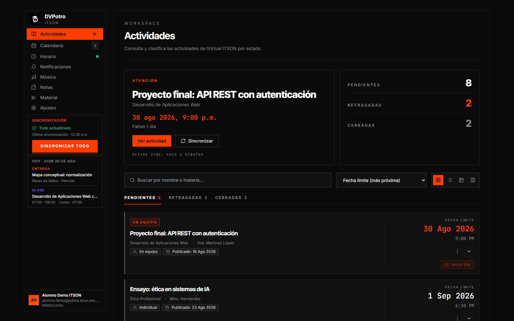
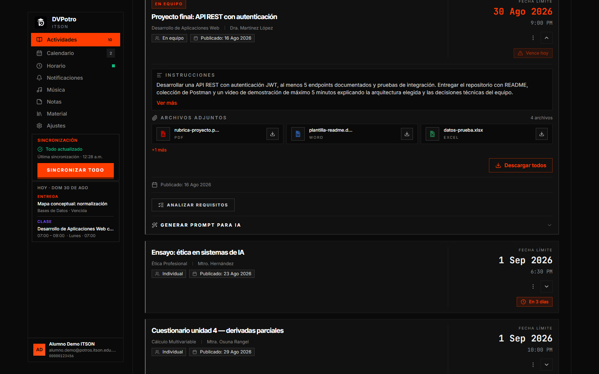
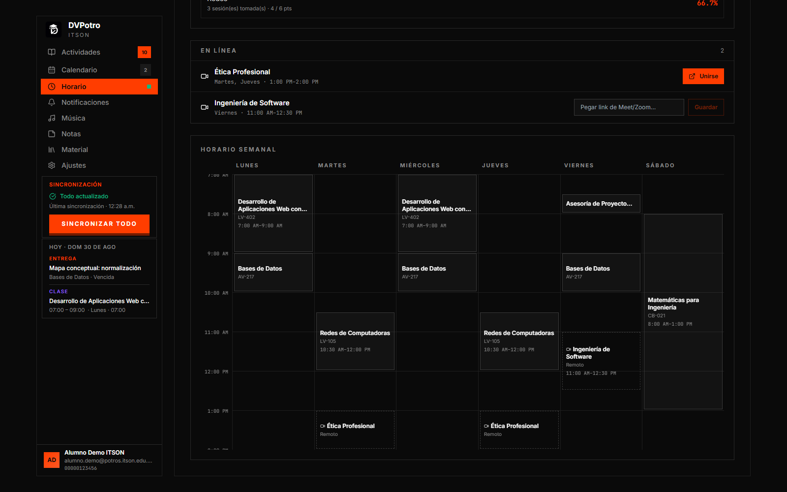
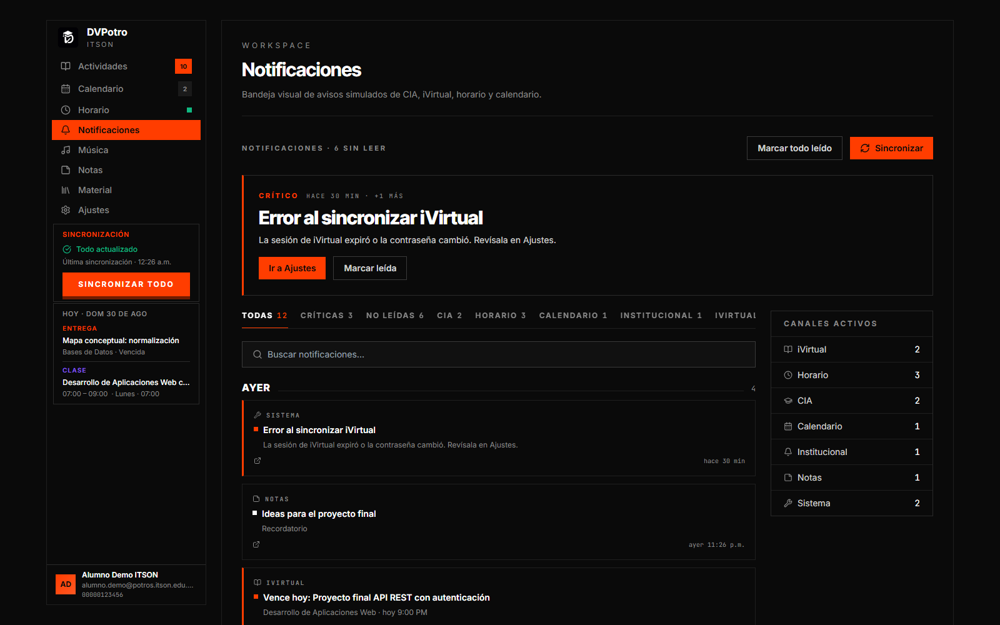
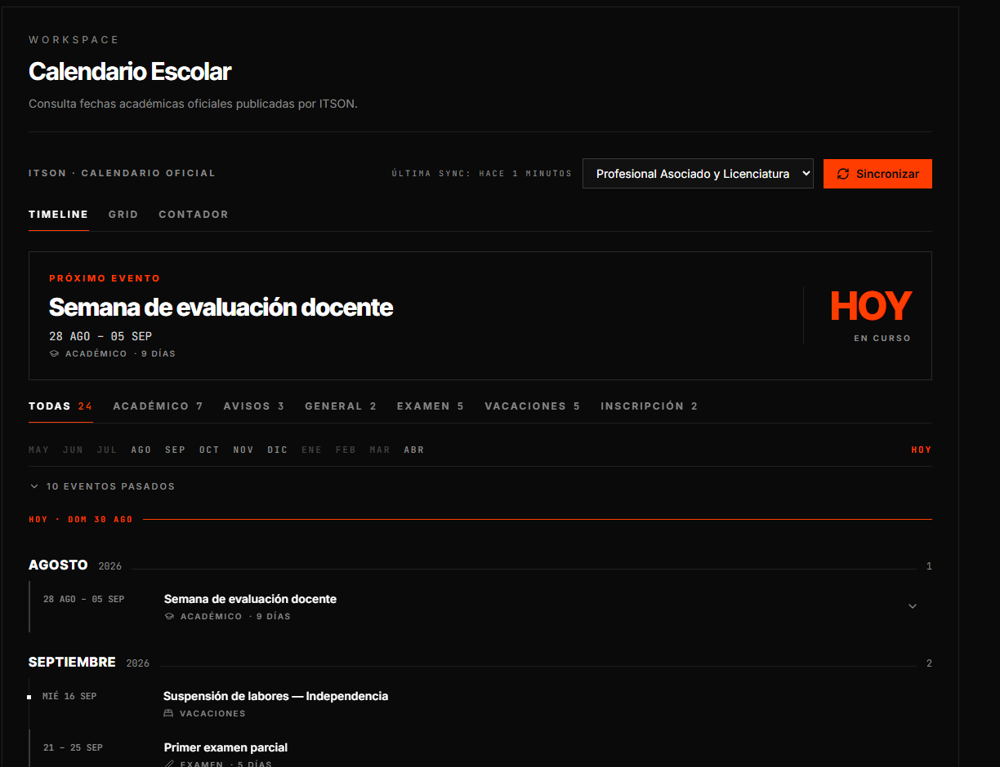
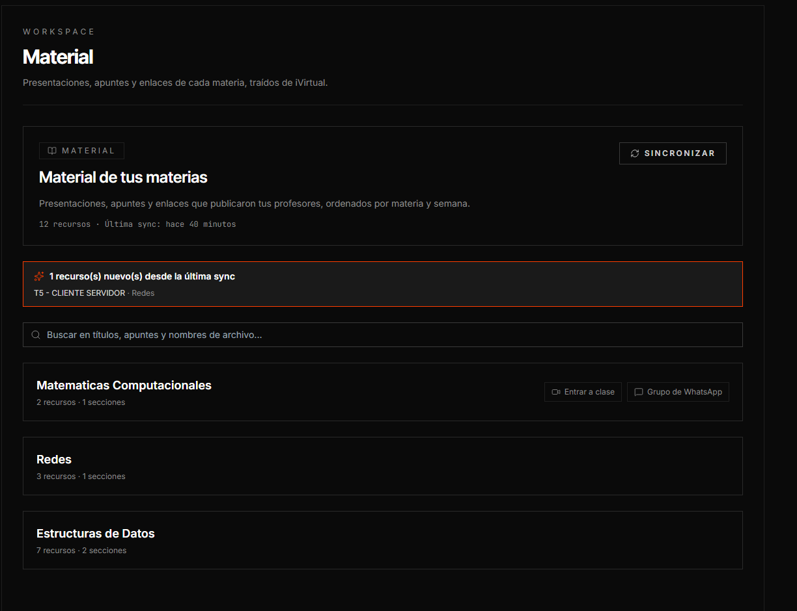
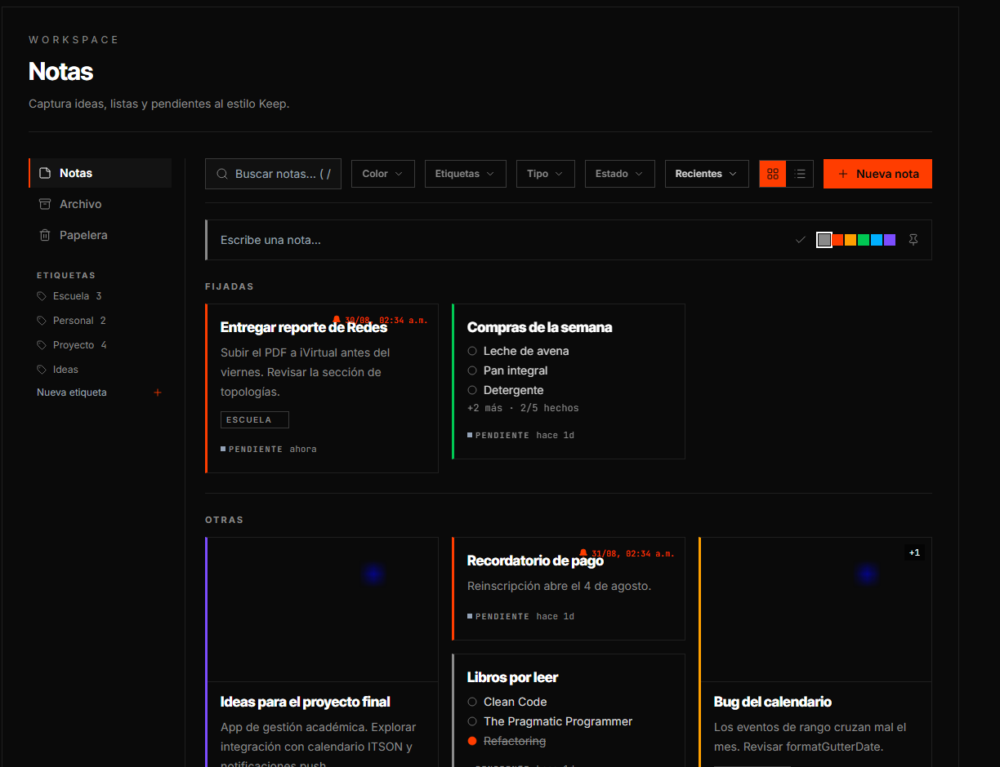
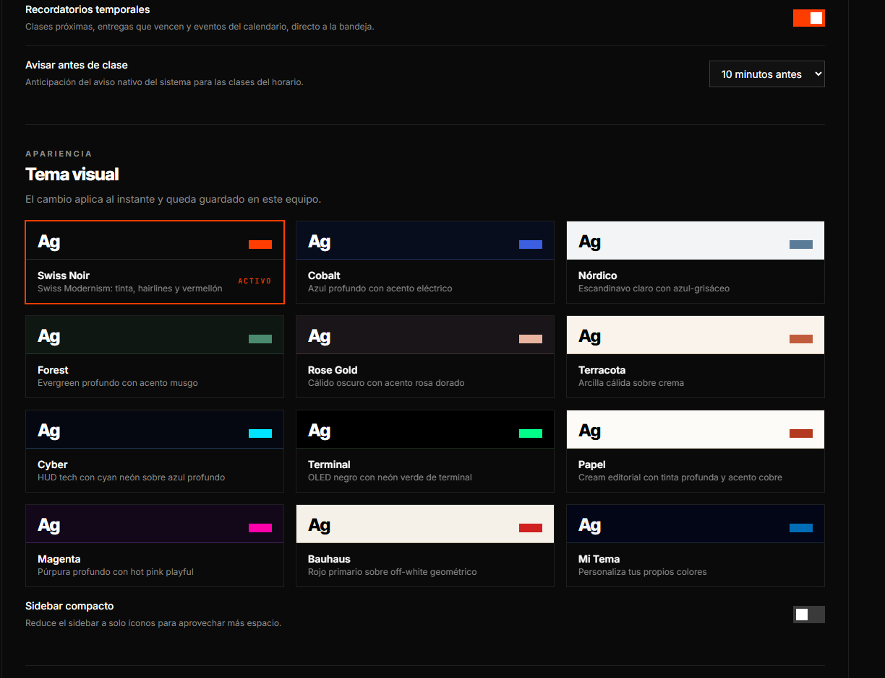
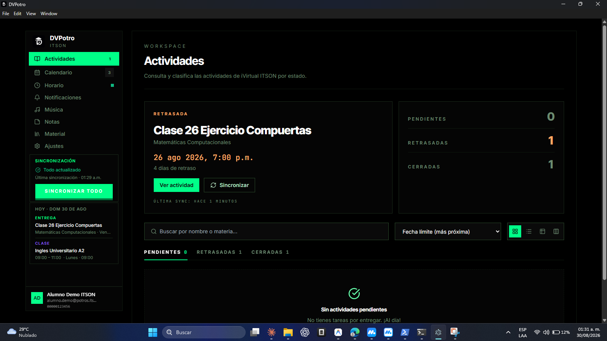
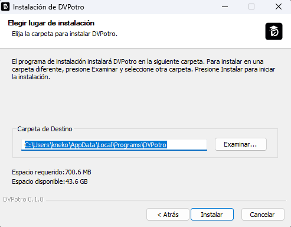

<title>DVPotro</title>
<meta name="description" content="DVPotro unifica iVirtual y CIA de ITSON en una sola aplicación de escritorio: actividades, horario, calificaciones, material y asistencia.">
<link rel="icon" type="image/png" href="assets/logo.png">
<meta property="og:type" content="website">
<meta property="og:title" content="DVPotro">
<meta property="og:description" content="Dos portales. Una sola ventana. App de escritorio para estudiantes de ITSON.">
<meta property="og:image" content="https://orsted118.github.io/scraper-app/assets/actividades.png">
<meta property="og:url" content="https://orsted118.github.io/scraper-app/">
<meta name="twitter:card" content="summary_large_image">

<link rel="preconnect" href="https://fonts.googleapis.com">
<link rel="preconnect" href="https://fonts.gstatic.com" crossorigin>
<link rel="stylesheet" href="https://fonts.googleapis.com/css2?family=Inter+Tight:wght@500;600;700;800&family=Inter:wght@400;500;600&family=JetBrains+Mono:wght@400;500;700&display=swap">

<style>
/* ============================================================
   DVPotro — landing
   Sistema visual: Swiss Noir, el mismo tema que corre la app.
   Tokens copiados literal de src/themes.js para que la pagina y
   el producto no puedan desincronizarse.
   Compromiso deliberado con una sola atmosfera (dark): la
   identidad del producto ES la tinta. Todo color se pinta
   explicito para que no herede el fondo del host.
   ============================================================ */

:root {
  /* Tinta y superficies */
  --ink:          #0A0A0A;
  --ink-raised:   #111111;
  --ink-high:     #1A1A1A;

  /* Hairlines: el Swiss no usa sombra, usa linea */
  --hairline:     #1F1F1F;
  --hairline-mid: #2A2A2A;
  --hairline-hi:  #3A3A3A;

  /* Un solo acento. Estado y urgencia, jamas decoracion. */
  --vermillion:      #FF3D00;
  --vermillion-hot:  #FF5722;
  --on-vermillion:   #0A0A0A;

  /* Papel */
  --paper:      #F5F5F5;
  --paper-max:  #FFFFFF;
  --paper-dim:  #D4D4D4;
  --paper-mute: #8A8A8A;

  --font-display: 'Inter Tight', 'Helvetica Neue', Arial, sans-serif;
  --font-body:    'Inter', 'Segoe UI', system-ui, sans-serif;
  --font-mono:    'JetBrains Mono', Consolas, ui-monospace, monospace;

  --gutter: 24px;
  --measure: 1120px;
}

*, *::before, *::after { box-sizing: border-box; }

html {
  -webkit-text-size-adjust: 100%;
  scroll-behavior: smooth;
}

/* El nav es sticky: sin este margen, saltar a #descargar deja el titulo
   escondido detras de la barra. */
section[id] { scroll-margin-top: 76px; }

@media (prefers-reduced-motion: reduce) {
  html { scroll-behavior: auto; }
}

body {
  margin: 0;
  /* El host compone detras: sin background explicito la pagina
     hereda la atmosfera equivocada. */
  background: var(--ink);
  color: var(--paper-dim);
  font-family: var(--font-body);
  font-size: 16px;
  line-height: 1.65;
  -webkit-font-smoothing: antialiased;
  overflow-x: hidden;
}

img { max-width: 100%; display: block; }

::selection { background: var(--vermillion); color: var(--on-vermillion); }

:focus-visible {
  outline: 2px solid var(--vermillion);
  outline-offset: 3px;
}

/* ---------- Rejilla de fondo ----------
   Swiss expone la retícula en vez de esconderla. Son hairlines del mismo
   token que separa las secciones, no una textura: la misma línea que
   estructura la página, hecha visible. Se disuelve con una máscara para que
   no compita con el contenido. */

.grid-bg { position: relative; isolation: isolate; }

.grid-bg::before {
  content: "";
  position: absolute;
  inset: 0;
  z-index: -1;
  pointer-events: none;
  background-image:
    repeating-linear-gradient(to right,  var(--hairline) 0 1px, transparent 1px 88px),
    repeating-linear-gradient(to bottom, var(--hairline) 0 1px, transparent 1px 88px);
  -webkit-mask-image: linear-gradient(to bottom, #000 0%, transparent 78%);
  mask-image: linear-gradient(to bottom, #000 0%, transparent 78%);
}

.grid-bg--up::before {
  -webkit-mask-image: linear-gradient(to top, #000 0%, transparent 78%);
  mask-image: linear-gradient(to top, #000 0%, transparent 78%);
}

/* Icono junto a un rótulo de sección. Hereda el color del rótulo. */
.kicker-icon {
  width: 15px;
  height: 15px;
  flex: none;
  vertical-align: -2px;
  margin-right: 8px;
}

.module__kicker { display: flex; align-items: center; }

/* ---------- Rejilla base ---------- */

.wrap {
  max-width: var(--measure);
  margin-inline: auto;
  padding-inline: var(--gutter);
}

/* Regla a sangre: separa secciones. En Swiss la linea hace el
   trabajo que en otros sistemas hace la sombra. */
.rule {
  border: 0;
  border-top: 1px solid var(--hairline);
  margin: 0;
}

.band { padding-block: 84px; }
.band--tight { padding-block: 56px; }

/* ---------- Tipografia ---------- */

.eyebrow {
  font-family: var(--font-mono);
  font-size: 11px;
  font-weight: 500;
  letter-spacing: 0.22em;
  text-transform: uppercase;
  color: var(--paper-mute);
  margin: 0 0 20px;
}
.eyebrow--hot { color: var(--vermillion); }

h1, h2, h3, h4 {
  font-family: var(--font-display);
  color: var(--paper-max);
  text-wrap: balance;
  margin: 0;
}

h1 {
  font-size: clamp(44px, 7.2vw, 88px);
  font-weight: 700;
  line-height: 0.96;
  letter-spacing: -0.045em;
}

h2 {
  font-size: clamp(30px, 4vw, 46px);
  font-weight: 700;
  line-height: 1.04;
  letter-spacing: -0.035em;
}

h3 {
  font-size: 21px;
  font-weight: 600;
  line-height: 1.25;
  letter-spacing: -0.02em;
}

p { margin: 0; }

.lede {
  font-size: 18px;
  line-height: 1.6;
  color: var(--paper-dim);
  max-width: 60ch;
}

.dim { color: var(--paper-mute); }

/* ---------- Nav ---------- */

.nav {
  position: sticky;
  top: 0;
  z-index: 50;
  background: var(--ink);
  border-bottom: 1px solid var(--hairline);
}

.nav__inner {
  max-width: var(--measure);
  margin-inline: auto;
  padding: 16px var(--gutter);
  display: flex;
  align-items: center;
  gap: 28px;
}

.brand {
  display: flex;
  align-items: center;
  gap: 11px;
  margin-right: auto;
  text-decoration: none;
}

/* El logo trae su propio contenedor redondeado, asi que no lleva borde ni
   fondo propios: seria una caja dentro de otra. */
.brand__mark {
  width: 32px;
  height: 32px;
  flex: none;
  display: block;
}

.brand__name {
  font-family: var(--font-display);
  font-size: 17px;
  font-weight: 700;
  letter-spacing: -0.03em;
  color: var(--paper-max);
  line-height: 1;
}

.brand__sub {
  font-family: var(--font-mono);
  font-size: 9px;
  letter-spacing: 0.26em;
  color: var(--paper-mute);
  line-height: 1;
  margin-top: 4px;
}

.nav__links { display: flex; gap: 26px; }

.nav__link {
  font-family: var(--font-mono);
  font-size: 11px;
  letter-spacing: 0.16em;
  text-transform: uppercase;
  color: var(--paper-mute);
  text-decoration: none;
  transition: color 170ms ease;
}
.nav__link:hover { color: var(--paper); }

/* ---------- Botones ---------- */

.btn {
  display: inline-flex;
  align-items: center;
  gap: 9px;
  padding: 13px 22px;
  border-radius: 0;
  font-family: var(--font-mono);
  font-size: 12px;
  font-weight: 500;
  letter-spacing: 0.14em;
  text-transform: uppercase;
  text-decoration: none;
  cursor: pointer;
  transition: background 170ms ease, border-color 170ms ease, color 170ms ease;
}

.btn--primary {
  background: var(--vermillion);
  color: var(--on-vermillion);
  border: 1px solid var(--vermillion);
  font-weight: 700;
}
.btn--primary:hover { background: var(--vermillion-hot); border-color: var(--vermillion-hot); }

.btn--ghost {
  background: transparent;
  color: var(--paper);
  border: 1px solid var(--hairline-hi);
}
.btn--ghost:hover { border-color: var(--paper-mute); }

.btn--sm { padding: 10px 16px; font-size: 11px; }

/* ---------- Hero ---------- */

.hero { padding-block: 88px 68px; }

.hero__grid {
  display: grid;
  grid-template-columns: 1fr;
  gap: 40px;
}

.hero__actions {
  display: flex;
  flex-wrap: wrap;
  gap: 12px;
  margin-top: 34px;
}

.hero__note {
  font-family: var(--font-mono);
  font-size: 11px;
  letter-spacing: 0.1em;
  color: var(--paper-mute);
  margin-top: 22px;
}

/* Marco de captura. Sin radius, sin sombra: el producto tampoco
   los usa (--radius-card y --shadow-card son 0 y none). */
.shot {
  border: 1px solid var(--hairline-mid);
  background: var(--ink);
  overflow: hidden;
}

.shot img { width: 100%; height: auto; }

.shot__bar {
  display: flex;
  align-items: center;
  gap: 8px;
  padding: 9px 13px;
  border-bottom: 1px solid var(--hairline);
  background: var(--ink-raised);
}

.shot__dot {
  width: 8px; height: 8px;
  background: var(--hairline-hi);
  flex: none;
}

.shot__title {
  font-family: var(--font-mono);
  font-size: 10px;
  letter-spacing: 0.2em;
  text-transform: uppercase;
  color: var(--paper-mute);
  margin-left: 6px;
}

.shot__caption {
  font-family: var(--font-mono);
  font-size: 11px;
  line-height: 1.6;
  letter-spacing: 0.04em;
  color: var(--paper-mute);
  margin-top: 12px;
}

/* ---------- Banda de metricas ---------- */

.metrics {
  display: grid;
  grid-template-columns: repeat(2, 1fr);
  border-top: 1px solid var(--hairline);
  border-left: 1px solid var(--hairline);
}

.metric {
  border-right: 1px solid var(--hairline);
  border-bottom: 1px solid var(--hairline);
  padding: 26px 22px;
}

.metric__value {
  font-family: var(--font-display);
  font-size: clamp(30px, 4.4vw, 44px);
  font-weight: 700;
  line-height: 1;
  letter-spacing: -0.04em;
  color: var(--paper-max);
  font-variant-numeric: tabular-nums;
}

.metric__label {
  font-family: var(--font-mono);
  font-size: 10px;
  letter-spacing: 0.18em;
  text-transform: uppercase;
  color: var(--paper-mute);
  margin-top: 11px;
}

/* ---------- Problema: el flujo viejo ---------- */

.flow {
  display: grid;
  grid-template-columns: 1fr;
  gap: 1px;
  background: var(--hairline);
  border: 1px solid var(--hairline);
  margin-top: 42px;
}

.flow__step {
  background: var(--ink);
  padding: 24px 22px;
}

.flow__n {
  font-family: var(--font-mono);
  font-size: 11px;
  letter-spacing: 0.2em;
  color: var(--vermillion);
  margin-bottom: 12px;
}

.flow__step h3 { font-size: 17px; margin-bottom: 8px; }
.flow__step p { font-size: 14.5px; line-height: 1.6; color: var(--paper-mute); }

.flow__step--fix { background: var(--ink-raised); }
.flow__step--fix .flow__n { color: var(--paper-mute); }

/* ---------- Modulos ---------- */

.module { display: grid; gap: 34px; grid-template-columns: 1fr; }
.module + .module { margin-top: 84px; }

.module__body { align-self: center; }

.module__kicker {
  font-family: var(--font-mono);
  font-size: 11px;
  letter-spacing: 0.2em;
  text-transform: uppercase;
  color: var(--vermillion);
  margin-bottom: 16px;
}

.module__body h2 { font-size: clamp(26px, 3.2vw, 36px); margin-bottom: 16px; }
.module__body p { color: var(--paper-dim); font-size: 16px; }

.facts { list-style: none; margin: 24px 0 0; padding: 0; }

.facts li {
  position: relative;
  padding: 11px 0 11px 20px;
  border-top: 1px solid var(--hairline);
  font-size: 14.5px;
  line-height: 1.55;
  color: var(--paper-mute);
}
.facts li:last-child { border-bottom: 1px solid var(--hairline); }

/* border-left 3px = estado. Es el mismo lexico que usa la app
   para marcar categoria en cards y notificaciones. */
.facts li::before {
  content: "";
  position: absolute;
  left: 0;
  top: 15px;
  width: 9px;
  height: 3px;
  background: var(--hairline-hi);
}

.facts strong { color: var(--paper); font-weight: 600; }

/* ---------- Ingenieria: la unica seccion que es secuencia ---------- */

.eng {
  display: grid;
  grid-template-columns: 1fr;
  gap: 1px;
  background: var(--hairline);
  border-block: 1px solid var(--hairline);
  margin-top: 46px;
}

.case {
  background: var(--ink);
  padding: 28px 24px;
  position: relative;
}

.case__n {
  font-family: var(--font-mono);
  font-size: 11px;
  font-weight: 500;
  letter-spacing: 0.2em;
  color: var(--paper-mute);
  margin-bottom: 14px;
  font-variant-numeric: tabular-nums;
}

.case h3 { margin-bottom: 10px; font-size: 19px; }

.case p {
  font-size: 14.5px;
  line-height: 1.62;
  color: var(--paper-mute);
}

.case p + p { margin-top: 10px; }

.case code {
  font-family: var(--font-mono);
  font-size: 12.5px;
  color: var(--paper-dim);
  background: var(--ink-high);
  padding: 1px 5px;
  border: 1px solid var(--hairline-mid);
}

.case__rule {
  margin-top: 16px;
  padding-top: 14px;
  border-top: 1px solid var(--hairline);
  font-family: var(--font-mono);
  font-size: 12px;
  line-height: 1.6;
  letter-spacing: 0.02em;
  color: var(--paper-dim);
}

.case__rule b {
  color: var(--vermillion);
  font-weight: 500;
  letter-spacing: 0.14em;
  text-transform: uppercase;
  font-size: 10px;
  display: block;
  margin-bottom: 6px;
}

/* ---------- Galeria compacta ---------- */

.gallery {
  display: grid;
  grid-template-columns: 1fr;
  gap: 28px;
  margin-top: 44px;
}

/* ---------- Stack ---------- */

.stack {
  display: grid;
  grid-template-columns: repeat(2, 1fr);
  border-top: 1px solid var(--hairline);
  border-left: 1px solid var(--hairline);
  margin-top: 40px;
}

.stack__cell {
  border-right: 1px solid var(--hairline);
  border-bottom: 1px solid var(--hairline);
  padding: 20px;
  display: flex;
  align-items: flex-start;
  gap: 14px;
  background: var(--ink);
  transition: background 180ms ease;
}

.stack__cell:hover { background: var(--ink-raised); }

/* Las marcas viven en monocromo: nueve colores de terceros sueltos romperian
   la regla de un solo acento que sostiene toda la pagina. El color real
   aparece al pasar por encima, donde ya es informacion y no ruido. */
.stack__icon {
  flex: none;
  width: 22px;
  height: 22px;
  display: grid;
  place-items: center;
  color: var(--paper-mute);
  transition: color 180ms ease;
}

.stack__cell:hover .stack__icon { color: var(--brand, var(--paper)); }

.stack__icon svg { display: block; }

.stack__text { display: block; min-width: 0; }

.stack__name {
  display: block;
  font-family: var(--font-display);
  font-size: 16px;
  font-weight: 600;
  letter-spacing: -0.02em;
  color: var(--paper-max);
}

.stack__role {
  display: block;
  font-family: var(--font-mono);
  font-size: 10.5px;
  letter-spacing: 0.13em;
  text-transform: uppercase;
  color: var(--paper-mute);
  margin-top: 7px;
}

/* ---------- App nativa ---------- */

.native__pair {
  display: grid;
  grid-template-columns: 1fr;
  gap: 28px;
  margin-top: 28px;
}

/* La notificacion es una imagen chica y ancha. Estirarla al ancho de la
   columna la dejaria borrosa, asi que se centra a tamano natural. */
.shot--center {
  display: grid;
  place-items: center;
  padding: 44px 24px;
  background: var(--ink-raised);
  min-height: 220px;
}

.shot--center img { width: auto; max-width: 100%; }

/* ---------- Descarga ---------- */

.close { padding-block: 92px; }

.close h2 { margin-bottom: 18px; }

.close__actions {
  display: flex;
  flex-wrap: wrap;
  gap: 12px;
  margin-top: 32px;
}

/* Ficha tecnica del instalador. Mono y tabular: son datos, no prosa. */
.spec {
  display: grid;
  grid-template-columns: repeat(2, 1fr);
  border-top: 1px solid var(--hairline);
  border-left: 1px solid var(--hairline);
  margin-top: 40px;
}

.spec__cell {
  border-right: 1px solid var(--hairline);
  border-bottom: 1px solid var(--hairline);
  padding: 18px 20px;
}

.spec__k {
  font-family: var(--font-mono);
  font-size: 10px;
  letter-spacing: 0.18em;
  text-transform: uppercase;
  color: var(--paper-mute);
}

.spec__v {
  font-family: var(--font-mono);
  font-size: 14px;
  color: var(--paper);
  margin-top: 8px;
  font-variant-numeric: tabular-nums;
}

/* Aviso de SmartScreen. El instalador no esta firmado y Windows lo marca:
   decirlo antes evita que el usuario piense que la app es maliciosa. */
.notice {
  border: 1px solid var(--hairline-mid);
  border-left: 3px solid var(--vermillion);
  background: var(--ink-raised);
  padding: 20px 22px;
  margin-top: 32px;
}

.notice__h {
  display: flex;
  align-items: center;
  font-family: var(--font-mono);
  font-size: 10px;
  font-weight: 500;
  letter-spacing: 0.18em;
  text-transform: uppercase;
  color: var(--vermillion);
  margin-bottom: 10px;
}

.notice p {
  font-size: 14.5px;
  line-height: 1.62;
  color: var(--paper-mute);
}

.notice b { color: var(--paper); font-weight: 600; }

/* ---------- Footer ---------- */

.foot {
  border-top: 1px solid var(--hairline);
  padding-block: 30px 40px;
}

.foot__inner {
  max-width: var(--measure);
  margin-inline: auto;
  padding-inline: var(--gutter);
  display: flex;
  flex-wrap: wrap;
  gap: 14px 28px;
  align-items: baseline;
}

.foot__note {
  font-family: var(--font-mono);
  font-size: 11px;
  letter-spacing: 0.1em;
  color: var(--paper-mute);
}
.foot__note:first-child { margin-right: auto; }

.foot a { color: var(--paper-dim); text-decoration: none; border-bottom: 1px solid var(--hairline-hi); }
.foot a:hover { color: var(--vermillion); border-color: var(--vermillion); }

/* ---------- Responsive ---------- */

@media (min-width: 720px) {
  .metrics { grid-template-columns: repeat(3, 1fr); }
  .stack   { grid-template-columns: repeat(3, 1fr); }
  .flow    { grid-template-columns: repeat(3, 1fr); }
  .eng     { grid-template-columns: repeat(2, 1fr); }
  .gallery { grid-template-columns: repeat(2, 1fr); }
  .spec    { grid-template-columns: repeat(4, 1fr); }
  .native__pair { grid-template-columns: 1fr 1fr; }
}

@media (min-width: 960px) {
  .band { padding-block: 104px; }
  .hero { padding-block: 104px 76px; }
  .hero__grid { grid-template-columns: 1fr; }
  .metrics { grid-template-columns: repeat(6, 1fr); }
  .eng     { grid-template-columns: repeat(3, 1fr); }

  .module { grid-template-columns: 7fr 5fr; gap: 52px; }
  .module--flip .module__shot { order: 2; }
  .module--flip .module__body { order: 1; }
}

@media (max-width: 719px) {
  .nav__links { display: none; }
  h1 { font-size: clamp(38px, 11vw, 56px); }
}

@media (prefers-reduced-motion: reduce) {
  * { animation-duration: 0.01ms !important; transition-duration: 0.01ms !important; }
}
</style>

<nav class="nav">
  <div class="nav__inner">
    <a class="brand" href="#top">
      
      <span>
        <span class="brand__name">DVPotro</span>
        <span class="brand__sub">ITSON</span>
      </span>
    </a>
    <div class="nav__links">
      <a class="nav__link" href="#modulos">Módulos</a>
      <a class="nav__link" href="#ingenieria">Ingeniería</a>
      <a class="nav__link" href="#escritorio">Escritorio</a>
      <a class="nav__link" href="#stack">Stack</a>
      <a class="nav__link" href="https://github.com/orsted118/scraper-app" target="_blank" rel="noopener">GitHub</a>
    </div>
    <a class="btn btn--primary btn--sm" href="#descargar">Descargar</a>
  </div>
</nav>

<main id="top">

  <!-- ===================== HERO ===================== -->
  <header class="hero wrap grid-bg">
    <div class="hero__grid">
      <div>
        <p class="eyebrow eyebrow--hot">Aplicación de escritorio · Windows</p>
        <h1>Dos portales.<br>Una sola ventana.</h1>
        <p class="lede" style="margin-top:26px;">
          ITSON reparte tu semestre entre <strong style="color:var(--paper-max);font-weight:600;">iVirtual</strong> y
          <strong style="color:var(--paper-max);font-weight:600;">CIA</strong>. DVPotro entra a los dos, extrae lo que
          importa y lo deja en una sola interfaz: actividades, horario, calificaciones, material y asistencia.
        </p>
        <div class="hero__actions">
          <a class="btn btn--primary" href="#descargar">Descargar para Windows</a>
          <a class="btn btn--ghost" href="#modulos">Ver los módulos</a>
        </div>
        <p class="hero__note">Windows 10 / 11 · Gratis · Se actualiza sola</p>
      </div>

      <figure style="margin:0;">
        <div class="shot">
          <div class="shot__bar">
            <span class="shot__dot"></span><span class="shot__dot"></span><span class="shot__dot"></span>
            <span class="shot__title">DVPotro — Actividades</span>
          </div>
          
        </div>
        <figcaption class="shot__caption">Todo lo que vence, ordenado por urgencia. Sin abrir un portal.</figcaption>
      </figure>
    </div>
  </header>

  <hr class="rule">

  <!-- ===================== METRICAS ===================== -->
  <section class="wrap band--tight" aria-label="El proyecto en números">
    <div class="metrics">
      <div class="metric"><div class="metric__value">2</div><div class="metric__label">Portales unificados</div></div>
      <div class="metric"><div class="metric__value">8</div><div class="metric__label">Módulos</div></div>
      <div class="metric"><div class="metric__value">116</div><div class="metric__label">Canales IPC</div></div>
      <div class="metric"><div class="metric__value">43k</div><div class="metric__label">Líneas de código</div></div>
      <div class="metric"><div class="metric__value">190</div><div class="metric__label">Commits</div></div>
      <div class="metric"><div class="metric__value">12</div><div class="metric__label">Temas visuales</div></div>
    </div>
  </section>

  <hr class="rule">

  <!-- ===================== PROBLEMA ===================== -->
  <section class="wrap band">
    <p class="eyebrow">El problema</p>
    <h2>Tres pestañas y una hoja aparte</h2>
    <p class="lede" style="margin-top:20px;">
      Revisar en qué anda tu semestre cuesta más de lo que debería, y el costo no es técnico: es de atención.
    </p>

    <div class="flow">
      <div class="flow__step">
        <div class="flow__n">Antes · 01</div>
        <h3>Entrar a iVirtual</h3>
        <p>Curso por curso, revisar qué tareas hay, cuáles vencen y dónde está el enlace de la videollamada.</p>
      </div>
      <div class="flow__step">
        <div class="flow__n">Antes · 02</div>
        <h3>Entrar a CIA</h3>
        <p>Otro login, otro portal, otra estructura. Acá viven el horario semanal y la boleta de calificaciones.</p>
      </div>
      <div class="flow__step flow__step--fix">
        <div class="flow__n">Ahora</div>
        <h3>Abrir DVPotro</h3>
        <p>La app entra a los dos portales, cruza los datos y te muestra el estado completo. Una ventana, un vistazo.</p>
      </div>
    </div>
  </section>

  <hr class="rule">

  <!-- ===================== MODULOS ===================== -->
  <section class="wrap band" id="modulos">
    <p class="eyebrow">Los módulos</p>
    <h2>Ocho superficies, una misma lógica</h2>
    <p class="lede" style="margin-top:20px;">
      Cada módulo lee de su fuente real, guarda caché con vencimiento y avisa cuando algo cambia.
    </p>

    <div style="margin-top:64px;">

      <!-- Actividades -->
      <article class="module">
        <figure class="module__shot" style="margin:0;">
          <div class="shot">
            
          </div>
        </figure>
        <div class="module__body">
          <div class="module__kicker"><svg class="kicker-icon" viewBox="0 0 24 24" fill="none" stroke="currentColor" stroke-width="2" stroke-linecap="square" aria-hidden="true"><path d="M2 3h6a4 4 0 0 1 4 4v14a3 3 0 0 0-3-3H2z"/><path d="M22 3h-6a4 4 0 0 0-4 4v14a3 3 0 0 1 3-3h7z"/></svg>Actividades · iVirtual</div>
          <h2>La consigna completa, no el título</h2>
          <p>
            Cada actividad trae instrucciones íntegras, adjuntos descargables con la sesión del scraper y la fecha
            límite en mono tabular. La app clasifica sola entre pendiente, retrasada y cerrada.
          </p>
          <ul class="facts">
            <li><strong>Cuatro vistas:</strong> tarjetas, lista compacta, tabla y kanban.</li>
            <li><strong>Analizar requisitos:</strong> un LLM desglosa la consigna en un checklist accionable y verifica tu entrega contra él.</li>
            <li><strong>Entrega desde la app:</strong> subís el archivo sin volver a Moodle.</li>
          </ul>
        </div>
      </article>

      <!-- Horario -->
      <article class="module module--flip">
        <figure class="module__shot" style="margin:0;">
          <div class="shot">
            
          </div>
        </figure>
        <div class="module__body">
          <div class="module__kicker"><svg class="kicker-icon" viewBox="0 0 24 24" fill="none" stroke="currentColor" stroke-width="2" stroke-linecap="square" aria-hidden="true"><circle cx="12" cy="12" r="9.5"/><path d="M12 6.5V12l4 2.5"/></svg>Horario · CIA + iVirtual</div>
          <h2>Presencial y remoto, por día</h2>
          <p>
            El horario sale de CIA; los enlaces de videollamada, de iVirtual. Una materia puede ser presencial lunes
            y miércoles y remota el viernes: la grilla lo distingue con borde punteado.
          </p>
          <ul class="facts">
            <li><strong>Asistencia integrada:</strong> porcentaje por materia y registro cuando el profesor abre la sesión.</li>
            <li><strong>Enlaces detectados solos</strong> en el curso de iVirtual, con opción de pegarlos a mano.</li>
            <li><strong>Ante la duda, presencial.</strong> Un falso remoto te deja en casa faltando a clase.</li>
          </ul>
        </div>
      </article>

      <!-- Notificaciones -->
      <article class="module">
        <figure class="module__shot" style="margin:0;">
          <div class="shot">
            
          </div>
        </figure>
        <div class="module__body">
          <div class="module__kicker"><svg class="kicker-icon" viewBox="0 0 24 24" fill="none" stroke="currentColor" stroke-width="2" stroke-linecap="square" aria-hidden="true"><path d="M6 8.5a6 6 0 0 1 12 0c0 6.5 2.5 8.5 2.5 8.5H3.5S6 15 6 8.5"/><path d="M10.2 20.5a2 2 0 0 0 3.6 0"/></svg>Notificaciones</div>
          <h2>Una bandeja para todo lo que cambió</h2>
          <p>
            Calificación nueva, actividad que vence, clase que arranca, noticia institucional. Todo entra por el mismo
            lugar, con aviso nativo de Windows y filtro por fuente.
          </p>
          <ul class="facts">
            <li><strong>Sincronización automática</strong> al abrir la app, al despertar la laptop y cada 15 minutos.</li>
            <li><strong>Sin ruido de arranque:</strong> la primera corrida registra lo que ya existía en vez de notificarlo todo.</li>
          </ul>
        </div>
      </article>

    </div>

    <!-- Galeria compacta -->
    <div style="margin-top:84px;">
      <p class="eyebrow">Y además</p>
      <div class="gallery">
        <figure style="margin:0;">
          <div class="shot">
            
          </div>
          <figcaption class="shot__caption">Calendario · fechas oficiales de ITSON, filtrables por tipo y con cuenta regresiva.</figcaption>
        </figure>
        <figure style="margin:0;">
          <div class="shot">
            
          </div>
          <figcaption class="shot__caption">Material · lo que publicó el profesor: PDFs, enlaces de Drive, apuntes y el grupo de la clase.</figcaption>
        </figure>
        <figure style="margin:0;">
          <div class="shot">
            
          </div>
          <figcaption class="shot__caption">Notas · texto enriquecido, listas, etiquetas, estados, recordatorios y papelera.</figcaption>
        </figure>
        <figure style="margin:0;">
          <div class="shot">
            
          </div>
          <figcaption class="shot__caption">Doce temas · Swiss Noir es el de fábrica. El último los deja definir a mano.</figcaption>
        </figure>
      </div>
    </div>
  </section>

  <hr class="rule">

  <!-- ===================== INGENIERIA ===================== -->
  <section class="wrap band" id="ingenieria">
    <p class="eyebrow">Bajo la superficie</p>
    <h2>Cómo está construida por dentro</h2>
    <p class="lede" style="margin-top:20px;">
      Leer dos portales institucionales con estructura frágil obliga a decidir qué hacer cuando el dato llega
      incompleto. Estas son las decisiones que sostienen la app cuando el portal cambia.
    </p>

    <div class="eng">

      <article class="case">
        <div class="case__n">01</div>
        <h3>Modalidad resuelta por día</h3>
        <p>
          Una materia puede ser presencial lunes y miércoles y remota el viernes. El portal no lo dice así: emite
          filas duplicadas de la misma clase, algunas sin texto de ubicación.
        </p>
        <p>
          La app distingue cada sesión por día, no solo por horario, y descarta las filas mudas al decidir la
          modalidad. Una fila sin ubicación aporta el día, pero no opina sobre si la clase es remota.
        </p>
        <div class="case__rule">
          <b>Criterio</b>
          Ante la duda, presencial. Mandarte al salón es recuperable; decirte "es remoto" y que faltes, no.
        </div>
      </article>

      <article class="case">
        <div class="case__n">02</div>
        <h3>Diez capas para un enlace</h3>
        <p>
          El link de la videollamada no vive en un campo. Puede estar en el DOM del curso, en un recurso de Moodle,
          en un foro, en la introducción, en una tarea, en un libro o detrás de un acortador.
        </p>
        <p>
          El buscador recorre diez capas en orden y devuelve cuál acertó, para poder depurar cuando el portal cambia.
        </p>
        <div class="case__rule">
          <b>Fallback</b>
          Si ninguna capa acierta, el usuario pega el enlace a mano y queda guardado.
        </div>
      </article>

      <article class="case">
        <div class="case__n">03</div>
        <h3>Credenciales cifradas en tu equipo</h3>
        <p>
          Tus contraseñas de iVirtual y CIA nunca salen de tu computadora y nunca llegan al navegador de la app.
        </p>
        <p>
          Viven en el proceso principal, cifradas con <code>safeStorage</code> —DPAPI en Windows— atadas a tu cuenta
          del sistema. Otro usuario del mismo equipo no puede descifrarlas.
        </p>
        <div class="case__rule">
          <b>Borrado real</b>
          La opción de eliminar credenciales las borra en el único lugar donde existen. No deja copias atrás.
        </div>
      </article>

      <article class="case">
        <div class="case__n">04</div>
        <h3>Cachés que saben su versión</h3>
        <p>
          Cada módulo guarda su resultado en disco con vencimiento, para abrir al instante y no golpear los portales
          en cada arranque.
        </p>
        <p>
          Horario y actividades llevan además <code>schemaVersion</code>. Cuando una actualización cambia cómo se
          derivan los datos, la caché vieja se descarta sola y se vuelve a extraer, sin esperar el vencimiento.
        </p>
        <div class="case__rule">
          <b>Efecto</b>
          Actualizás la app y ves los datos nuevos en el momento, no al día siguiente.
        </div>
      </article>

      <article class="case">
        <div class="case__n">05</div>
        <h3>La asistencia nunca se marca sola</h3>
        <p>
          Registrar asistencia es afirmar que estuviste en clase. Es escritura sobre un registro académico, no una
          lectura más.
        </p>
        <p>
          No hay auto-marcado: ni al abrir la app, ni por temporizador, ni durante una sincronización. Y el POST
          jamás se arma a mano: se navega al formulario real del portal y se clickea su propio botón.
        </p>
        <div class="case__rule">
          <b>Si la página no es la esperada</b>
          Se aborta y se reporta. Nunca se inventa el envío.
        </div>
      </article>

      <article class="case">
        <div class="case__n">06</div>
        <h3>Ocho proveedores de IA en cadena</h3>
        <p>
          El analizador de consignas no depende de un solo proveedor. Hay ocho backends en orden de preferencia y un
          pool de claves que se autodescubre desde el entorno.
        </p>
        <p>
          Si una clave agota su cuota, se pasa a la siguiente; si el proveedor cae, se pasa al siguiente proveedor.
          Cada intento queda registrado, incluidos los fallidos.
        </p>
        <div class="case__rule">
          <b>El log guarda</b>
          Nombres de variable de entorno. Nunca el valor de las claves.
        </div>
      </article>

    </div>
  </section>

  <hr class="rule">

  <!-- ===================== STACK ===================== -->
  <section class="wrap band" id="stack">
    <p class="eyebrow">Construido con</p>
    <h2>Stack</h2>

    <div class="stack">
      <div class="stack__cell" style="--brand:#47848F;">
        <span class="stack__icon"><svg viewBox="0 0 24 24" width="18" height="18" fill="currentColor" aria-hidden="true"><path d="M12.0111 0c-.85 0-1.5392.6891-1.5392 1.5392 0 .8501.6891 1.5393 1.5392 1.5393.595 0 1.11-.338 1.3662-.832 2.2208 1.2675 3.847 5.4728 3.847 10.3623 0 2.0715-.2891 4.056-.825 5.7685a.3215.3215 0 0 0 .2107.403.322.322 0 0 0 .4033-.2111c.5558-1.7763.8542-3.8251.8542-5.9604 0-5.1927-1.7717-9.686-4.3206-11.0027.001-.0223.0035-.0443.0035-.0669 0-.85-.6891-1.5392-1.5393-1.5392zm0 .6432a.896.896 0 1 1 0 1.792.896.896 0 1 1 0-1.792zm-5.486 4.3052c-2.067.0074-3.6473.6646-4.3885 1.9485-.7375 1.2774-.5267 2.971.5113 4.7813a.3217.3217 0 0 0 .558-.32C2.271 9.7274 2.089 8.266 2.6938 7.2185c.821-1.422 3.033-1.9552 5.9321-1.4271a.3216.3216 0 0 0 .1153-.6329c-.784-.1428-1.5271-.2125-2.216-.21zm11.0522.0176a.3216.3216 0 0 0-.0084.6432c1.8337.0239 3.1556.5956 3.7502 1.6256.8192 1.419.1798 3.5947-1.7182 5.837a.322.322 0 0 0 .0377.4535.3215.3215 0 0 0 .4532-.0377c2.0535-2.426 2.7708-4.8661 1.7845-6.5744-.7257-1.257-2.26-1.9207-4.299-1.9472zm-2.6984.2924a.3225.3225 0 0 0-.0647.0072c-1.8568.3979-3.8333 1.1755-5.7314 2.2714-4.5699 2.6384-7.5924 6.4948-7.3601 9.3717-.4726.2628-.7928.7664-.7928 1.3455 0 .85.6892 1.5392 1.5393 1.5392.85 0 1.5392-.6891 1.5392-1.5392 0-.8501-.6891-1.5393-1.5392-1.5393-.038 0-.0754.003-.1128.0057-.1002-2.5597 2.7434-6.1412 7.048-8.6265 1.8413-1.063 3.7551-1.8163 5.5445-2.1997a.3217.3217 0 0 0-.07-.636zm-2.8787 6.2364a1.1192 1.1192 0 0 0-.2243.0255c-.6012.1301-.983.7225-.8533 1.3238.1302.6012.7226.9832 1.3238.8533.6012-.1302.9832-.7226.8533-1.3238-.1139-.526-.5816-.8844-1.0995-.8788zM4.532 13.341a.321.321 0 0 0-.2318.0835.3214.3214 0 0 0-.0214.4542c1.2682 1.3936 2.9157 2.701 4.7946 3.7857 4.4146 2.5489 9.1056 3.2849 11.5608 1.8392a1.53 1.53 0 0 0 .8966.2899c.8501 0 1.5392-.6891 1.5392-1.5392 0-.8501-.689-1.5393-1.5392-1.5393-.85 0-1.5392.6892-1.5392 1.5393 0 .276.0737.5344.201.7584-2.2448 1.214-6.631.5002-10.7976-1.9054-1.8228-1.0524-3.418-2.3181-4.6404-3.6614a.3206.3206 0 0 0-.2226-.1049zm-2.0628 4.0172a.896.896 0 1 1 0 1.792.896.896 0 1 1 0-1.792zm19.0616 0a.896.896 0 1 1 0 1.792.891.891 0 0 1-.5864-.2194c-.0025-.004-.0039-.0083-.0066-.0123a.3195.3195 0 0 0-.0957-.0914.896.896 0 0 1 .6887-1.4689zm-14.0045 1.368a.3215.3215 0 0 0-.3207.4296C8.2793 22.154 10.036 24 12.0111 24c1.4406 0 2.7735-.9822 3.8128-2.711a.3215.3215 0 0 0-.11-.4413.3219.3219 0 0 0-.4415.11c-.934 1.5537-2.0812 2.399-3.2613 2.399-1.6407 0-3.2075-1.6465-4.2-4.4179a.3216.3216 0 0 0-.2848-.2126z"/></svg></span>
        <span class="stack__text">
          <span class="stack__name">Electron</span>
          <span class="stack__role">Shell de escritorio · IPC</span>
        </span>
      </div>
      <div class="stack__cell" style="--brand:#61DAFB;">
        <span class="stack__icon"><svg viewBox="0 0 24 24" width="18" height="18" fill="currentColor" aria-hidden="true"><path d="M14.23 12.004a2.236 2.236 0 0 1-2.235 2.236 2.236 2.236 0 0 1-2.236-2.236 2.236 2.236 0 0 1 2.235-2.236 2.236 2.236 0 0 1 2.236 2.236zm2.648-10.69c-1.346 0-3.107.96-4.888 2.622-1.78-1.653-3.542-2.602-4.887-2.602-.41 0-.783.093-1.106.278-1.375.793-1.683 3.264-.973 6.365C1.98 8.917 0 10.42 0 12.004c0 1.59 1.99 3.097 5.043 4.03-.704 3.113-.39 5.588.988 6.38.32.187.69.275 1.102.275 1.345 0 3.107-.96 4.888-2.624 1.78 1.654 3.542 2.603 4.887 2.603.41 0 .783-.09 1.106-.275 1.374-.792 1.683-3.263.973-6.365C22.02 15.096 24 13.59 24 12.004c0-1.59-1.99-3.097-5.043-4.032.704-3.11.39-5.587-.988-6.38-.318-.184-.688-.277-1.092-.278zm-.005 1.09v.006c.225 0 .406.044.558.127.666.382.955 1.835.73 3.704-.054.46-.142.945-.25 1.44-.96-.236-2.006-.417-3.107-.534-.66-.905-1.345-1.727-2.035-2.447 1.592-1.48 3.087-2.292 4.105-2.295zm-9.77.02c1.012 0 2.514.808 4.11 2.28-.686.72-1.37 1.537-2.02 2.442-1.107.117-2.154.298-3.113.538-.112-.49-.195-.964-.254-1.42-.23-1.868.054-3.32.714-3.707.19-.09.4-.127.563-.132zm4.882 3.05c.455.468.91.992 1.36 1.564-.44-.02-.89-.034-1.345-.034-.46 0-.915.01-1.36.034.44-.572.895-1.096 1.345-1.565zM12 8.1c.74 0 1.477.034 2.202.093.406.582.802 1.203 1.183 1.86.372.64.71 1.29 1.018 1.946-.308.655-.646 1.31-1.013 1.95-.38.66-.773 1.288-1.18 1.87-.728.063-1.466.098-2.21.098-.74 0-1.477-.035-2.202-.093-.406-.582-.802-1.204-1.183-1.86-.372-.64-.71-1.29-1.018-1.946.303-.657.646-1.313 1.013-1.954.38-.66.773-1.286 1.18-1.868.728-.064 1.466-.098 2.21-.098zm-3.635.254c-.24.377-.48.763-.704 1.16-.225.39-.435.782-.635 1.174-.265-.656-.49-1.31-.676-1.947.64-.15 1.315-.283 2.015-.386zm7.26 0c.695.103 1.365.23 2.006.387-.18.632-.405 1.282-.66 1.933-.2-.39-.41-.783-.64-1.174-.225-.392-.465-.774-.705-1.146zm3.063.675c.484.15.944.317 1.375.498 1.732.74 2.852 1.708 2.852 2.476-.005.768-1.125 1.74-2.857 2.475-.42.18-.88.342-1.355.493-.28-.958-.646-1.956-1.1-2.98.45-1.017.81-2.01 1.085-2.964zm-13.395.004c.278.96.645 1.957 1.1 2.98-.45 1.017-.812 2.01-1.086 2.964-.484-.15-.944-.318-1.37-.5-1.732-.737-2.852-1.706-2.852-2.474 0-.768 1.12-1.742 2.852-2.476.42-.18.88-.342 1.356-.494zm11.678 4.28c.265.657.49 1.312.676 1.948-.64.157-1.316.29-2.016.39.24-.375.48-.762.705-1.158.225-.39.435-.788.636-1.18zm-9.945.02c.2.392.41.783.64 1.175.23.39.465.772.705 1.143-.695-.102-1.365-.23-2.006-.386.18-.63.406-1.282.66-1.933zM17.92 16.32c.112.493.2.968.254 1.423.23 1.868-.054 3.32-.714 3.708-.147.09-.338.128-.563.128-1.012 0-2.514-.807-4.11-2.28.686-.72 1.37-1.536 2.02-2.44 1.107-.118 2.154-.3 3.113-.54zm-11.83.01c.96.234 2.006.415 3.107.532.66.905 1.345 1.727 2.035 2.446-1.595 1.483-3.092 2.295-4.11 2.295-.22-.005-.406-.05-.553-.132-.666-.38-.955-1.834-.73-3.703.054-.46.142-.944.25-1.438zm4.56.64c.44.02.89.034 1.345.034.46 0 .915-.01 1.36-.034-.44.572-.895 1.095-1.345 1.565-.455-.47-.91-.993-1.36-1.565z"/></svg></span>
        <span class="stack__text">
          <span class="stack__name">React 18</span>
          <span class="stack__role">Renderer</span>
        </span>
      </div>
      <div class="stack__cell" style="--brand:#9135FF;">
        <span class="stack__icon"><svg viewBox="0 0 24 24" width="18" height="18" fill="currentColor" aria-hidden="true"><path d="M13.056 23.238a.57.57 0 0 1-1.02-.355v-5.202c0-.63-.512-1.143-1.144-1.143H5.148a.57.57 0 0 1-.464-.903l3.777-5.29c.54-.753 0-1.804-.93-1.804H.57a.574.574 0 0 1-.543-.746.6.6 0 0 1 .08-.157L5.008.78a.57.57 0 0 1 .467-.24h14.589a.57.57 0 0 1 .466.903l-3.778 5.29c-.54.755 0 1.806.93 1.806h5.745c.238 0 .424.138.513.322a.56.56 0 0 1-.063.603z"/></svg></span>
        <span class="stack__text">
          <span class="stack__name">Vite 5</span>
          <span class="stack__role">Build y dev server</span>
        </span>
      </div>
      <div class="stack__cell" style="--brand:#2EAD33;">
        <span class="stack__icon"><svg viewBox="0 0 24 24" width="21" height="21" fill="none" stroke="currentColor" stroke-width="2" stroke-linecap="square" stroke-linejoin="miter" aria-hidden="true"><rect x="3" y="4" width="18" height="16"/><path d="M3 8.5h18"/><path d="M10 11.5l5.5 3.5L10 18.5z"/></svg></span>
        <span class="stack__text">
          <span class="stack__name">Playwright</span>
          <span class="stack__role">Scraping de portales</span>
        </span>
      </div>
      <div class="stack__cell" style="--brand:#06B6D4;">
        <span class="stack__icon"><svg viewBox="0 0 24 24" width="18" height="18" fill="currentColor" aria-hidden="true"><path d="M12.001,4.8c-3.2,0-5.2,1.6-6,4.8c1.2-1.6,2.6-2.2,4.2-1.8c0.913,0.228,1.565,0.89,2.288,1.624 C13.666,10.618,15.027,12,18.001,12c3.2,0,5.2-1.6,6-4.8c-1.2,1.6-2.6,2.2-4.2,1.8c-0.913-0.228-1.565-0.89-2.288-1.624 C16.337,6.182,14.976,4.8,12.001,4.8z M6.001,12c-3.2,0-5.2,1.6-6,4.8c1.2-1.6,2.6-2.2,4.2-1.8c0.913,0.228,1.565,0.89,2.288,1.624 c1.177,1.194,2.538,2.576,5.512,2.576c3.2,0,5.2-1.6,6-4.8c-1.2,1.6-2.6,2.2-4.2,1.8c-0.913-0.228-1.565-0.89-2.288-1.624 C10.337,13.382,8.976,12,6.001,12z"/></svg></span>
        <span class="stack__text">
          <span class="stack__name">Tailwind 3</span>
          <span class="stack__role">Layout</span>
        </span>
      </div>
      <div class="stack__cell" style="--brand:#9FEAF9;">
        <span class="stack__icon"><svg viewBox="0 0 24 24" width="21" height="21" fill="none" stroke="currentColor" stroke-width="2" stroke-linecap="square" stroke-linejoin="miter" aria-hidden="true"><path d="M12 2.5l9 5v9l-9 5-9-5v-9z"/><path d="M3 7.5l9 5 9-5"/><path d="M12 12.5v9"/></svg></span>
        <span class="stack__text">
          <span class="stack__name">electron-builder</span>
          <span class="stack__role">Instalador NSIS</span>
        </span>
      </div>
      <div class="stack__cell" style="--brand:#9FEAF9;">
        <span class="stack__icon"><svg viewBox="0 0 24 24" width="21" height="21" fill="none" stroke="currentColor" stroke-width="2" stroke-linecap="square" stroke-linejoin="miter" aria-hidden="true"><path d="M20.5 12a8.5 8.5 0 1 1-2.6-6.1"/><path d="M20.5 3.5v5h-5"/></svg></span>
        <span class="stack__text">
          <span class="stack__name">electron-updater</span>
          <span class="stack__role">Auto-actualización</span>
        </span>
      </div>
      <div class="stack__cell" style="--brand:#FF3D00;">
        <span class="stack__icon"><svg viewBox="0 0 24 24" width="21" height="21" fill="none" stroke="currentColor" stroke-width="2" stroke-linecap="square" stroke-linejoin="miter" aria-hidden="true"><rect x="3.5" y="10.5" width="17" height="10.5"/><path d="M7.5 10.5V6.8a4.5 4.5 0 0 1 9 0v3.7"/></svg></span>
        <span class="stack__text">
          <span class="stack__name">safeStorage · DPAPI</span>
          <span class="stack__role">Cifrado de credenciales</span>
        </span>
      </div>
      <div class="stack__cell" style="--brand:#F56565;">
        <span class="stack__icon"><svg viewBox="0 0 24 24" width="18" height="18" fill="currentColor" aria-hidden="true"><path d="M18.483 1.123a1.09 1.09 0 0 0-.752.362 1.09 1.09 0 0 0 .088 1.54 11.956 11.956 0 0 1 4 8.946 7.62 7.62 0 0 1-7.637 7.636 7.62 7.62 0 0 1-7.637-7.636 3.255 3.255 0 0 1 3.273-3.273c1.82 0 3.273 1.45 3.273 3.273a1.09 1.09 0 0 0 1.09 1.09 1.09 1.09 0 0 0 1.092-1.09c0-3-2.455-5.455-5.455-5.455s-5.454 2.455-5.454 5.455c0 5.408 4.408 9.818 9.818 9.818 5.41 0 9.818-4.41 9.818-9.818A14.16 14.16 0 0 0 19.272 1.4a1.09 1.09 0 0 0-.789-.277ZM9.818 2.15C4.408 2.151 0 6.561 0 11.97a14.16 14.16 0 0 0 4.8 10.637 1.09 1.09 0 0 0 1.54-.096 1.09 1.09 0 0 0-.095-1.54 11.957 11.957 0 0 1-4.063-9 7.62 7.62 0 0 1 7.636-7.637 7.62 7.62 0 0 1 7.637 7.636 3.256 3.256 0 0 1-3.273 3.273 3.256 3.256 0 0 1-3.273-3.273 1.09 1.09 0 0 0-1.09-1.09 1.09 1.09 0 0 0-1.092 1.09c0 3 2.455 5.455 5.455 5.455s5.454-2.455 5.454-5.455c0-5.408-4.408-9.818-9.818-9.818z"/></svg></span>
        <span class="stack__text">
          <span class="stack__name">lucide-react</span>
          <span class="stack__role">Iconografía SVG</span>
        </span>
      </div>
    </div>
  </section>

  <hr class="rule">

  <!-- ===================== APP NATIVA ===================== -->
  <section class="wrap band" id="escritorio">
    <p class="eyebrow">Aplicación de escritorio</p>
    <h2>No es una página web disfrazada</h2>
    <p class="lede" style="margin-top:20px;">
      DVPotro se instala, vive en tu barra de tareas y usa las notificaciones del sistema. Corre aunque el
      navegador esté cerrado.
    </p>

    <figure style="margin:44px 0 0;">
      <div class="shot">
        
      </div>
      <figcaption class="shot__caption">
        Ventana nativa de Windows. Acá corriendo con el tema Terminal, uno de los doce — el de fábrica es Swiss Noir.
      </figcaption>
    </figure>

    <div class="native__pair">
      <figure style="margin:0;">
        <div class="shot shot--center">
          
        </div>
        <figcaption class="shot__caption">Instalador propio, con elección de carpeta y accesos directos.</figcaption>
      </figure>
      <div style="align-self:center;">
        <ul class="facts" style="margin-top:0;">
          <li><strong>Notificaciones del sistema</strong> — avisos de Windows para entregas que vencen y clases que arrancan, no dentro de una pestaña.</li>
          <li><strong>Arranca con sesión propia</strong> — no depende de que tengas el navegador abierto ni de que estés logueado en los portales.</li>
          <li><strong>Actualización automática</strong> — revisa si hay versión nueva y la instala sola.</li>
          <li><strong>Todo local</strong> — la caché y las credenciales viven en tu equipo. No hay servidor intermedio.</li>
        </ul>
      </div>
    </div>
  </section>

  <hr class="rule">

  <!-- ===================== DESCARGA ===================== -->
  <section class="wrap close grid-bg grid-bg--up" id="descargar">
    
    <p class="eyebrow eyebrow--hot">Descargar</p>
    <h2>Probalo en tu equipo</h2>
    <p class="lede" style="margin-top:20px;">
      Instalador para Windows. Una vez instalado, DVPotro se actualiza solo: cuando publico una versión nueva, la
      app la descarga y te avisa.
    </p>

    <div class="close__actions">
      <a class="btn btn--primary" href="https://github.com/orsted118/scraper-app/releases/latest" target="_blank" rel="noopener">Descargar para Windows</a>
      <a class="btn btn--ghost" href="https://github.com/orsted118/scraper-app" target="_blank" rel="noopener">Ver el código</a>
    </div>

    <div class="spec">
      <div class="spec__cell"><div class="spec__k">Versión</div><div class="spec__v">0.1.0</div></div>
      <div class="spec__cell"><div class="spec__k">Tamaño</div><div class="spec__v">190 MB</div></div>
      <div class="spec__cell"><div class="spec__k">Sistema</div><div class="spec__v">Windows 10 / 11 · 64 bits</div></div>
      <div class="spec__cell"><div class="spec__k">Cuenta necesaria</div><div class="spec__v">Alumno ITSON activo</div></div>
    </div>

    <div class="flow" style="margin-top:40px;">
      <div class="flow__step">
        <div class="flow__n">Paso · 01</div>
        <h3>Instalá</h3>
        <p>Ejecutá el instalador y elegí la carpeta. Crea acceso directo en el escritorio y en el menú de inicio.</p>
      </div>
      <div class="flow__step">
        <div class="flow__n">Paso · 02</div>
        <h3>Cargá tus credenciales</h3>
        <p>En Ajustes van las de iVirtual y las de CIA, que son distintas. Quedan cifradas en tu equipo.</p>
      </div>
      <div class="flow__step flow__step--fix">
        <div class="flow__n">Paso · 03</div>
        <h3>Sincronizá</h3>
        <p>La primera corrida trae actividades, horario, material y calificaciones. Después se actualiza sola.</p>
      </div>
    </div>

    <div class="notice">
      <div class="notice__h"><svg class="kicker-icon" viewBox="0 0 24 24" fill="none" stroke="currentColor" stroke-width="2" stroke-linecap="square" aria-hidden="true"><path d="M12 3.5 22 20.5H2z"/><path d="M12 10v4"/><path d="M12 17.2h.01"/></svg>Antes de instalar</div>
      <p>
        El instalador no tiene firma digital de código, así que <b>Windows va a mostrar una advertencia de
        SmartScreen</b>. Es lo normal en software independiente: firmar cuesta una licencia anual. Para continuar,
        hacé clic en <b>Más información</b> y después en <b>Ejecutar de todas formas</b>. El código está publicado
        entero si querés revisarlo o compilarlo vos mismo.
      </p>
    </div>
  </section>

</main>

<footer class="foot">
  <div class="foot__inner">
    <span class="foot__note">DVPotro · Proyecto personal · ITSON</span>
    <span class="foot__note">Capturas tomadas con datos de demostración</span>
    <span class="foot__note"><a href="https://github.com/orsted118/scraper-app" target="_blank" rel="noopener">github.com/orsted118/scraper-app</a></span>
  </div>
</footer>
